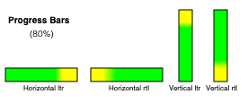
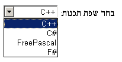

button elementdetails and summary elementsinput element as a text entry widgetinput element as domain-specific widgetsinput element as a range controlinput element as a color
wellinput element as a checkbox and radio button widgetsinput element as a file upload controlinput element as a buttonmarquee elementmeter elementprogress elementselect elementtextarea elementUser agents are not required to present HTML documents in any particular way. However, this section provides a set of suggestions for rendering HTML documents that, if followed, are likely to lead to a user experience that closely resembles the experience intended by the documents' authors. So as to avoid confusion regarding the normativity of this section, "must" has not been used. Instead, the term "expected" is used to indicate behavior that will lead to this experience. For the purposes of conformance for user agents designated as supporting the suggested default rendering, the term "expected" in this section has the same conformance implications as "must".
The suggestions in this section are generally expressed in CSS terms. User agents are expected to either support CSS, or translate from the CSS rules given in this section to approximations for other presentation mechanisms.
In the absence of style-layer rules to the contrary (e.g. author style sheets), user agents are expected to render an element so that it conveys to the user the meaning that the element represents, as described by this specification.
The suggestions in this section generally assume a visual output medium with a resolution of 96dpi or greater, but HTML is intended to apply to multiple media (it is a media-independent language). User agent implementers are encouraged to adapt the suggestions in this section to their target media.
An element is being rendered if it has any associated CSS layout boxes, SVG layout boxes, or some equivalent in other styling languages.
Just being off-screen does not mean the element is not being
rendered. The presence of the hidden attribute normally
means the element is not being rendered, though this might be overridden by the style
sheets.
The fully active state does not affect whether an element is being rendered or not. Even if a document is not fully active and not shown at all to the user, elements within it can still qualify as "being rendered".
An element is said to intersect the viewport when it is being rendered and its associated CSS layout box intersects the viewport.
Similar to the being rendered state, elements in non-fully active documents can still intersect the viewport. The viewport is not shared between documents and might not always be shown to the user, so an element in a non-fully active document can still intersect the viewport associated with its document.
This specification does not define the precise timing for when the intersection is tested, but it is suggested that the timing match that of the Intersection Observer API. [INTERSECTIONOBSERVER]
An element is delegating its rendering to its children if it is not being rendered but its children (if any) could be rendered, as a result of CSS 'display: contents', or some equivalent in other styling languages. [CSSDISPLAY]
User agents that do not honor author-level CSS style sheets are nonetheless expected to act as if they applied the CSS rules given in these sections in a manner consistent with this specification and the relevant CSS and Unicode specifications. [CSS] [UNICODE] [BIDI]
This is especially important for issues relating to the
The CSS rules given in these subsections are, except where otherwise specified, expected to be used as part of the user-agent level style sheet defaults for all documents that contain HTML elements.
Some rules are intended for the author-level zero-specificity presentational hints part of the CSS cascade; these are explicitly called out as presentational hints.
When the text below says that an attribute attribute on an element element maps to the pixel length property (or properties) properties, it means that if element has an attribute attribute set, and parsing that attribute's value using the rules for parsing non-negative integers doesn't generate an error, then the user agent is expected to use the parsed value as a pixel length for a presentational hint for properties.
When the text below says that an attribute attribute on an element element maps to the dimension property (or properties) properties, it means that if element has an attribute attribute set, and parsing that attribute's value using the rules for parsing dimension values doesn't generate an error, then the user agent is expected to use the parsed dimension as the value for a presentational hint for properties, with the value given as a pixel length if the dimension was a length, and with the value given as a percentage if the dimension was a percentage.
When the text below says that an attribute attribute on an element element maps to the dimension property (ignoring zero) (or properties) properties, it means that if element has an attribute attribute set, and parsing that attribute's value using the rules for parsing nonzero dimension values doesn't generate an error, then the user agent is expected to use the parsed dimension as the value for a presentational hint for properties, with the value given as a pixel length if the dimension was a length, and with the value given as a percentage if the dimension was a percentage.
When the text below says that a pair of attributes w and h on an
element element map to the aspect-ratio property, it means that if
element has both attributes w and h, and parsing those
attributes' values using the rules for parsing non-negative integers doesn't
generate an error for either, then the user agent is expected to use the parsed
integers as a presentational hint for the
auto w /
h.
When the text below says that a pair of attributes w and h on an
element element map to the aspect-ratio property (using dimension rules), it
means that if element has both attributes w and h, and parsing
those attributes' values using the rules for parsing dimension values doesn't
generate an error or return a percentage for either, then the user agent is expected
to use the parsed dimensions as a presentational hint
for the auto w /
h.
When a user agent is to align descendants of a node, the user agent is
expected to align only those descendants that have both their
align attribute. When multiple elements are to align a particular descendant, the most deeply nested such element is
expected to override the others. Aligned elements are expected to be
aligned by having the used values of their margins on the
line-left and line-right sides be set accordingly.
[CSSLOGICAL] [CSSWM]
@namespace "http://www.w3.org/1999/xhtml";
area, base, basefont, datalist, head, link, meta, noembed,
noframes, param, rp, script, style, template, title {
display: none;
}
{
display: none;
}
[hidden=until-found i]:not(embed) {
content-visibility: hidden;
}
embed[hidden] { display: inline; height: 0; width: 0; }
input[type=hidden i] { display: none !important; }
@media (scripting) {
noscript { display: none !important; }
}@namespace "http://www.w3.org/1999/xhtml";
html, body { display: block; }For each property in the table below, given a body element, the first attribute
that exists maps to the pixel length property on the body element. If
none of the attributes for a property are found, or if the value of the attribute that was found
cannot be parsed successfully, then a default value of 8px is expected to be used
for that property instead.
| Property | Source | ||||||||||||||
|---|---|---|---|---|---|---|---|---|---|---|---|---|---|---|---|
| The | body element's marginheight attribute
The | body element's topmargin attribute
The | body element's container frame element's marginheight attribute
The | body element's marginwidth attribute
The | body element's rightmargin attribute
The | body element's container frame element's marginwidth attribute
The | body element's marginheight attribute
The | body element's bottommargin attribute
The | body element's container frame element's marginheight attribute
The | body element's marginwidth attribute
The | body element's leftmargin attribute
The | body element's container frame element's marginwidth attribute
|
If the body element's node document's node navigable is
a child navigable, and the container of that
navigable is a frame or iframe element, then the
container frame element of the body element is that frame or
iframe element. Otherwise, there is no container frame element.
The above requirements imply that a page can change the margins of another page
(including one from another origin) using, for example, an iframe. This
is potentially a security risk, as it might in some cases allow an attack to contrive a situation
in which a page is rendered not as the author intended, possibly for the purposes of phishing or
otherwise misleading the user.
If a Document's node navigable is a child navigable,
then it is expected to be positioned and sized to fit inside the content
box of the container of that navigable.
If the container is not being rendered, the
navigable is expected to have a viewport with zero width
and zero height.
If a Document's node navigable is a child navigable,
the container of that navigable is a
frame or iframe element, that element has a scrolling attribute, and that attribute's value is an ASCII
case-insensitive match for the string "off", "noscroll", or "no", then the user agent is
expected to prevent any scrollbars from being shown for the viewport of
the Document's node navigable, regardless of the
When a body element has a background
attribute set to a non-empty value, the new value is expected to be encoding-parsed-and-serialized relative to
the element's node document, and if that does not return failure, the user agent is
expected to treat the attribute as a presentational hint setting the element's
When a body element has a bgcolor
attribute set, the new value is expected to be parsed using the rules for
parsing a legacy color value, and if that does not return failure, the user agent is
expected to treat the attribute as a presentational hint setting the element's
When a body element has a text attribute, its
value is expected to be parsed using the rules for parsing a legacy color
value, and if that does not return failure, the user agent is expected to
treat the attribute as a presentational hint setting
the element's
When a body element has a link attribute, its
value is expected to be parsed using the rules for parsing a legacy color
value, and if that does not return failure, the user agent is expected to
treat the attribute as a presentational hint setting
the Document matching the :link pseudo-class to the resulting color.
When a body element has a vlink attribute,
its value is expected to be parsed using the rules for parsing a legacy color
value, and if that does not return failure, the user agent is expected to
treat the attribute as a presentational hint setting
the Document matching the :visited pseudo-class to the resulting color.
When a body element has an alink attribute,
its value is expected to be parsed using the rules for parsing a legacy color
value, and if that does not return failure, the user agent is expected to
treat the attribute as a presentational hint setting
the Document matching the
:active pseudo-class and either the :link pseudo-class or the :visited pseudo-class to the resulting color.
@namespace "http://www.w3.org/1999/xhtml";
address, blockquote, center, dialog, div, figure, figcaption, footer, form,
header, hr, legend, listing, main, p, plaintext, pre, search, xmp {
display: block;
}
blockquote, figure, listing, p, plaintext, pre, xmp {
margin-block: 1em;
}
blockquote, figure { margin-inline: 40px; }
address { font-style: italic; }
listing, plaintext, pre, xmp {
font-family: monospace; white-space: pre;
}
dialog:not([open]) { display: none; }
dialog {
position: absolute;
inset-inline-start: 0; inset-inline-end: 0;
width: fit-content;
height: fit-content;
margin: auto;
border: solid;
padding: 1em;
background-color: Canvas;
color: CanvasText;
}
dialog:modal {
position: fixed;
overflow: auto;
inset-block: 0;
max-width: calc(100% - 6px - 2em);
max-height: calc(100% - 6px - 2em);
}
dialog::backdrop {
background: rgba(0,0,0,0.1);
}
[popover]:not(:popover-open):not(dialog[open]) {
display:none;
}
dialog:popover-open {
display:block;
}
[popover] {
position: fixed;
inset: 0;
width: fit-content;
height: fit-content;
margin: auto;
border: solid;
padding: 0.25em;
overflow: auto;
color: CanvasText;
background-color: Canvas;
}
:popover-open::backdrop {
position: fixed;
inset: 0;
pointer-events: none !important;
background-color: transparent;
}
slot {
display: contents;
}The following rules are also expected to apply, as presentational hints:
@namespace "http://www.w3.org/1999/xhtml";
pre[wrap] { white-space: pre-wrap; }In quirks mode, the following rules are also expected to apply:
@namespace "http://www.w3.org/1999/xhtml";
form { margin-block-end: 1em; }The center element, and the div element when it has an align attribute whose value is an ASCII
case-insensitive match for either the string "center" or the string
"middle", are expected to center text within themselves, as
if they had their
The div element, when it has an align
attribute whose value is an ASCII case-insensitive match for the string "left", is expected to left-align text within itself, as if it had
its
The div element, when it has an align
attribute whose value is an ASCII case-insensitive match for the string "right", is expected to right-align text within itself, as if it had
its
The div element, when it has an align
attribute whose value is an ASCII case-insensitive match for the string "justify", is expected to full-justify text within itself, as if it
had its
@namespace "http://www.w3.org/1999/xhtml";
cite, dfn, em, i, var { font-style: italic; }
b, strong { font-weight: bolder; }
code, kbd, samp, tt { font-family: monospace; }
big { font-size: larger; }
small { font-size: smaller; }
sub { vertical-align: sub; }
sup { vertical-align: super; }
sub, sup { line-height: normal; font-size: smaller; }
ruby { display: ruby; }
rt { display: ruby-text; }
:link { color: #0000EE; }
:visited { color: #551A8B; }
:link:active, :visited:active { color: #FF0000; }
:link, :visited { text-decoration: underline; cursor: pointer; }
:focus-visible { outline: auto; }
mark { background: yellow; color: black; } /* this color is just a suggestion and can be changed based on implementation feedback */
abbr[title], acronym[title] { text-decoration: dotted underline; }
ins, u { text-decoration: underline; }
del, s, strike { text-decoration: line-through; }
q::before { content: open-quote; }
q::after { content: close-quote; }
br { display-outside: newline; } /* this also has bidi implications */
nobr { white-space: nowrap; }
wbr { display-outside: break-opportunity; } /* this also has bidi implications */
nobr wbr { white-space: normal; }The following rules are also expected to apply, as presentational hints:
@namespace "http://www.w3.org/1999/xhtml";
br[clear=left i] { clear: left; }
br[clear=right i] { clear: right; }
br[clear=all i], br[clear=both i] { clear: both; }For the purposes of the CSS ruby model, runs of children of ruby elements that are
not rt or rp elements are expected to be wrapped in
anonymous boxes whose
When a particular part of a ruby has more than one annotation, the annotations should be distributed on both sides of the base text so as to minimize the stacking of ruby annotations on one side.
When it becomes possible to do so, the preceding requirement will be updated to be
expressed in terms of CSS ruby. (Currently, CSS ruby does not handle nested ruby
elements or multiple sequential rt elements, which is how this semantic is
expressed.)
User agents that do not support correct ruby rendering are expected to render
parentheses around the text of rt elements in the absence of rp
elements.
User agents are expected to support the br elements with clear attributes) in the manner described in the non-normative note
to this effect in CSS.
The initial value for the
When a font element has a color
attribute, its value is expected to be parsed using the rules for parsing a
legacy color value, and if that does not return failure, the user agent is
expected to treat the attribute as a presentational hint setting the element's
When a font element has a face
attribute, the user agent is expected to treat the attribute as a presentational hint setting the element's
When a font element has a size
attribute, the user agent is expected to use the following steps, known as the
rules for parsing a legacy font size, to treat the attribute as a presentational hint setting the element's
Let input be the attribute's value.
Let position be a pointer into input, initially pointing at the start of the string.
Skip ASCII whitespace within input given position.
If position is past the end of input, there is no presentational hint. Return.
If the character at position is a U+002B PLUS SIGN character (+), then let mode be relative-plus, and advance position to the next character. Otherwise, if the character at position is a U+002D HYPHEN-MINUS character (-), then let mode be relative-minus, and advance position to the next character. Otherwise, let mode be absolute.
Collect a sequence of code points that are ASCII digits from input given position, and let digits be the resulting sequence.
If digits is the empty string, there is no presentational hint. Return.
Interpret digits as a base-ten integer. Let value be the resulting number.
If mode is relative-plus, then increment value by 3. If mode is relative-minus, then let value be the result of subtracting value from 3.
If value is greater than 7, let it be 7.
If value is less than 1, let it be 1.
Set the
| value | | 1
| 'x-small'
| 2
| 'small'
| 3
| 'medium'
| 4
| 'large'
| 5
| 'x-large'
| 6
| 'xx-large'
| 7
| 'xxx-large'
| |
|---|
@namespace "http://www.w3.org/1999/xhtml";
[dir]:dir(ltr), bdi:dir(ltr), input[type=tel i]:dir(ltr) { direction: ltr; }
[dir]:dir(rtl), bdi:dir(rtl) { direction: rtl; }
address, blockquote, center, div, figure, figcaption, footer, form, header, hr,
legend, listing, main, p, plaintext, pre, summary, xmp, article, aside,
:heading, hgroup, nav, section, search, table, caption, colgroup, col, thead,
tbody, tfoot, tr, td, th, dir, dd, dl, dt, menu, ol, ul, li, bdi, output,
[dir=ltr i], [dir=rtl i], [dir=auto i] {
unicode-bidi: isolate;
}
bdo, bdo[dir] { unicode-bidi: isolate-override; }
input[dir=auto i]:is([type=search i], [type=tel i], [type=url i],
[type=email i]), textarea[dir=auto i], pre[dir=auto i] {
unicode-bidi: plaintext;
}
/* see prose for input elements whose type attribute is in the Text state */
/* the rules setting the 'content' property on br and wbr elements also has bidi implications */When an input element's dir attribute is in the
auto state and its type
attribute is in the Text state, then the user agent is
expected to act as if it had a user-agent-level style sheet rule setting the
Input fields (i.e. textarea elements, and input elements when their
type attribute is in the Text, Search,
Telephone, URL,
or Email state) are expected to present
an editing user interface with a directionality that matches the element's
When the document's character encoding is ISO-8859-8, the following rules are additionally expected to apply, following those above: [ENCODING]
@namespace "http://www.w3.org/1999/xhtml";
address, blockquote, center, div, figure, figcaption, footer, form, header, hr,
legend, listing, main, p, plaintext, pre, summary, xmp, article, aside,
:heading, hgroup, nav, section, search, table, caption, colgroup, col, thead,
tbody, tfoot, tr, td, th, dir, dd, dl, dt, menu, ol, ul, li, [dir=ltr i],
[dir=rtl i], [dir=auto i], *|* {
unicode-bidi: bidi-override;
}
input:not([type=submit i]):not([type=reset i]):not([type=button i]),
textarea {
unicode-bidi: normal;
}@namespace "http://www.w3.org/1999/xhtml";
article, aside, :heading, hgroup, nav, section {
display: block;
}
:heading { font-weight: bold; }
:heading(1) { margin-block: 0.67em; font-size: 2.00em; }
:heading(2) { margin-block: 0.83em; font-size: 1.50em; }
:heading(3) { margin-block: 1.00em; font-size: 1.17em; }
:heading(4) { margin-block: 1.33em; font-size: 1.00em; }
:heading(5) { margin-block: 1.67em; font-size: 0.83em; }
:heading(6, 7, 8, 9) {
font-size: 0.67em;
margin-block: 2.33em;
}
@namespace "http://www.w3.org/1999/xhtml";
dir, dd, dl, dt, menu, ol, ul { display: block; }
li { display: list-item; text-align: match-parent; }
dir, dl, menu, ol, ul { margin-block: 1em; }
:is(dir, dl, menu, ol, ul) :is(dir, dl, menu, ol, ul) {
margin-block: 0;
}
dd { margin-inline-start: 40px; }
dir, menu, ol, ul { padding-inline-start: 40px; }
ol, ul, menu { counter-reset: list-item; }
ol { list-style-type: decimal; }
dir, menu, ul {
list-style-type: disc;
}
:is(dir, menu, ol, ul) :is(dir, menu, ul) {
list-style-type: circle;
}
:is(dir, menu, ol, ul) :is(dir, menu, ol, ul) :is(dir, menu, ul) {
list-style-type: square;
}The following rules are also expected to apply, as presentational hints:
@namespace "http://www.w3.org/1999/xhtml";
ol[type="1"], li[type="1"] { list-style-type: decimal; }
ol[type=a s], li[type=a s] { list-style-type: lower-alpha; }
ol[type=A s], li[type=A s] { list-style-type: upper-alpha; }
ol[type=i s], li[type=i s] { list-style-type: lower-roman; }
ol[type=I s], li[type=I s] { list-style-type: upper-roman; }
ul[type=none i], li[type=none i] { list-style-type: none; }
ul[type=disc i], li[type=disc i] { list-style-type: disc; }
ul[type=circle i], li[type=circle i] { list-style-type: circle; }
ul[type=square i], li[type=square i] { list-style-type: square; }In quirks mode, the following rules are also expected to apply:
@namespace "http://www.w3.org/1999/xhtml";
li { list-style-position: inside; }
li :is(dir, menu, ol, ul) { list-style-position: outside; }
:is(dir, menu, ol, ul) :is(dir, menu, ol, ul, li) { list-style-position: unset; }When rendering li elements, non-CSS user agents are expected to use
the ordinal value of the li element to render the counter in the list
item marker.
For CSS user agents, some aspects of rendering list items are defined by the CSS Lists specification. Additionally, the following attribute mappings are expected to apply: [CSSLISTS]
When an li element has a value attribute, and parsing that attribute's value using the
rules for parsing integers doesn't generate an error, the user agent is
expected to use the parsed value value as a presentational hint for the list-item value.
When an ol element has a start
attribute or a reversed attribute, or both, the user agent
is expected to use the following steps to treat the attributes as a presentational hint for the
Let value be null.
If the element has a start attribute, then set
value to the result of parsing the attribute's value using the rules for
parsing integers.
If the element has a reversed attribute, then:
If value is an integer, then increment value by 1 and return
reversed(list-item) value.
Otherwise, return reversed(list-item).
Either the start attribute was absent, or
parsing its value resulted in an error.
Otherwise:
If value is an integer, then decrement value by 1 and return
list-item value.
Otherwise, there is no presentational hint.
@namespace "http://www.w3.org/1999/xhtml";
table { display: table; }
caption { display: table-caption; }
colgroup, colgroup[hidden] { display: table-column-group; }
col, col[hidden] { display: table-column; }
thead, thead[hidden] { display: table-header-group; }
tbody, tbody[hidden] { display: table-row-group; }
tfoot, tfoot[hidden] { display: table-footer-group; }
tr, tr[hidden] { display: table-row; }
td, th { display: table-cell; }
colgroup[hidden], col[hidden], thead[hidden], tbody[hidden],
tfoot[hidden], tr[hidden] {
visibility: collapse;
}
table {
box-sizing: border-box;
border-spacing: 2px;
border-collapse: separate;
text-indent: initial;
}
td, th { padding: 1px; }
th { font-weight: bold; }
caption { text-align: center; }
thead, tbody, tfoot, table > tr { vertical-align: middle; }
tr, td, th { vertical-align: inherit; }
thead, tbody, tfoot, tr { border-color: inherit; }
table[rules=none i], table[rules=groups i], table[rules=rows i],
table[rules=cols i], table[rules=all i], table[frame=void i],
table[frame=above i], table[frame=below i], table[frame=hsides i],
table[frame=lhs i], table[frame=rhs i], table[frame=vsides i],
table[frame=box i], table[frame=border i],
table[rules=none i] > tr > td, table[rules=none i] > tr > th,
table[rules=groups i] > tr > td, table[rules=groups i] > tr > th,
table[rules=rows i] > tr > td, table[rules=rows i] > tr > th,
table[rules=cols i] > tr > td, table[rules=cols i] > tr > th,
table[rules=all i] > tr > td, table[rules=all i] > tr > th,
table[rules=none i] > thead > tr > td, table[rules=none i] > thead > tr > th,
table[rules=groups i] > thead > tr > td, table[rules=groups i] > thead > tr > th,
table[rules=rows i] > thead > tr > td, table[rules=rows i] > thead > tr > th,
table[rules=cols i] > thead > tr > td, table[rules=cols i] > thead > tr > th,
table[rules=all i] > thead > tr > td, table[rules=all i] > thead > tr > th,
table[rules=none i] > tbody > tr > td, table[rules=none i] > tbody > tr > th,
table[rules=groups i] > tbody > tr > td, table[rules=groups i] > tbody > tr > th,
table[rules=rows i] > tbody > tr > td, table[rules=rows i] > tbody > tr > th,
table[rules=cols i] > tbody > tr > td, table[rules=cols i] > tbody > tr > th,
table[rules=all i] > tbody > tr > td, table[rules=all i] > tbody > tr > th,
table[rules=none i] > tfoot > tr > td, table[rules=none i] > tfoot > tr > th,
table[rules=groups i] > tfoot > tr > td, table[rules=groups i] > tfoot > tr > th,
table[rules=rows i] > tfoot > tr > td, table[rules=rows i] > tfoot > tr > th,
table[rules=cols i] > tfoot > tr > td, table[rules=cols i] > tfoot > tr > th,
table[rules=all i] > tfoot > tr > td, table[rules=all i] > tfoot > tr > th {
border-color: black;
}The following rules are also expected to apply, as presentational hints:
@namespace "http://www.w3.org/1999/xhtml";
table[align=left i] { float: left; }
table[align=right i] { float: right; }
table[align=center i] { margin-inline: auto; }
thead[align=absmiddle i], tbody[align=absmiddle i], tfoot[align=absmiddle i],
tr[align=absmiddle i], td[align=absmiddle i], th[align=absmiddle i] {
text-align: center;
}
caption[align=bottom i] { caption-side: bottom; }
p[align=left i], h1[align=left i], h2[align=left i], h3[align=left i],
h4[align=left i], h5[align=left i], h6[align=left i] {
text-align: left;
}
p[align=right i], h1[align=right i], h2[align=right i], h3[align=right i],
h4[align=right i], h5[align=right i], h6[align=right i] {
text-align: right;
}
p[align=center i], h1[align=center i], h2[align=center i], h3[align=center i],
h4[align=center i], h5[align=center i], h6[align=center i] {
text-align: center;
}
p[align=justify i], h1[align=justify i], h2[align=justify i], h3[align=justify i],
h4[align=justify i], h5[align=justify i], h6[align=justify i] {
text-align: justify;
}
thead[valign=top i], tbody[valign=top i], tfoot[valign=top i],
tr[valign=top i], td[valign=top i], th[valign=top i] {
vertical-align: top;
}
thead[valign=middle i], tbody[valign=middle i], tfoot[valign=middle i],
tr[valign=middle i], td[valign=middle i], th[valign=middle i] {
vertical-align: middle;
}
thead[valign=bottom i], tbody[valign=bottom i], tfoot[valign=bottom i],
tr[valign=bottom i], td[valign=bottom i], th[valign=bottom i] {
vertical-align: bottom;
}
thead[valign=baseline i], tbody[valign=baseline i], tfoot[valign=baseline i],
tr[valign=baseline i], td[valign=baseline i], th[valign=baseline i] {
vertical-align: baseline;
}
td[nowrap], th[nowrap] { white-space: nowrap; }
table[rules=none i], table[rules=groups i], table[rules=rows i],
table[rules=cols i], table[rules=all i] {
border-style: hidden;
border-collapse: collapse;
}
table[border] { border-style: outset; } /* only if border is not equivalent to zero */
table[frame=void i] { border-style: hidden; }
table[frame=above i] { border-style: outset hidden hidden hidden; }
table[frame=below i] { border-style: hidden hidden outset hidden; }
table[frame=hsides i] { border-style: outset hidden outset hidden; }
table[frame=lhs i] { border-style: hidden hidden hidden outset; }
table[frame=rhs i] { border-style: hidden outset hidden hidden; }
table[frame=vsides i] { border-style: hidden outset; }
table[frame=box i], table[frame=border i] { border-style: outset; }
table[border] > tr > td, table[border] > tr > th,
table[border] > thead > tr > td, table[border] > thead > tr > th,
table[border] > tbody > tr > td, table[border] > tbody > tr > th,
table[border] > tfoot > tr > td, table[border] > tfoot > tr > th {
/* only if border is not equivalent to zero */
border-width: 1px;
border-style: inset;
}
table[rules=none i] > tr > td, table[rules=none i] > tr > th,
table[rules=none i] > thead > tr > td, table[rules=none i] > thead > tr > th,
table[rules=none i] > tbody > tr > td, table[rules=none i] > tbody > tr > th,
table[rules=none i] > tfoot > tr > td, table[rules=none i] > tfoot > tr > th,
table[rules=groups i] > tr > td, table[rules=groups i] > tr > th,
table[rules=groups i] > thead > tr > td, table[rules=groups i] > thead > tr > th,
table[rules=groups i] > tbody > tr > td, table[rules=groups i] > tbody > tr > th,
table[rules=groups i] > tfoot > tr > td, table[rules=groups i] > tfoot > tr > th,
table[rules=rows i] > tr > td, table[rules=rows i] > tr > th,
table[rules=rows i] > thead > tr > td, table[rules=rows i] > thead > tr > th,
table[rules=rows i] > tbody > tr > td, table[rules=rows i] > tbody > tr > th,
table[rules=rows i] > tfoot > tr > td, table[rules=rows i] > tfoot > tr > th {
border-width: 1px;
border-style: none;
}
table[rules=cols i] > tr > td, table[rules=cols i] > tr > th,
table[rules=cols i] > thead > tr > td, table[rules=cols i] > thead > tr > th,
table[rules=cols i] > tbody > tr > td, table[rules=cols i] > tbody > tr > th,
table[rules=cols i] > tfoot > tr > td, table[rules=cols i] > tfoot > tr > th {
border-width: 1px;
border-block-style: none;
border-inline-style: solid;
}
table[rules=all i] > tr > td, table[rules=all i] > tr > th,
table[rules=all i] > thead > tr > td, table[rules=all i] > thead > tr > th,
table[rules=all i] > tbody > tr > td, table[rules=all i] > tbody > tr > th,
table[rules=all i] > tfoot > tr > td, table[rules=all i] > tfoot > tr > th {
border-width: 1px;
border-style: solid;
}
table[rules=groups i] > colgroup {
border-inline-width: 1px;
border-inline-style: solid;
}
table[rules=groups i] > thead,
table[rules=groups i] > tbody,
table[rules=groups i] > tfoot {
border-block-width: 1px;
border-block-style: solid;
}
table[rules=rows i] > tr, table[rules=rows i] > thead > tr,
table[rules=rows i] > tbody > tr, table[rules=rows i] > tfoot > tr {
border-block-width: 1px;
border-block-style: solid;
}In quirks mode, the following rules are also expected to apply:
@namespace "http://www.w3.org/1999/xhtml";
table {
font-weight: initial;
font-style: initial;
font-variant: initial;
font-size: initial;
line-height: initial;
white-space: initial;
text-align: initial;
}For the purposes of the CSS table model, the col element is expected
to be treated as if it was present as many times as its span
attribute specifies.
For the purposes of the CSS table model, the colgroup element, if it contains no
col element, is expected to be treated as if it had as many such
children as its span attribute specifies.
For the purposes of the CSS table model, the colspan and
rowspan attributes on td and th
elements are expected to provide the special knowledge regarding cells spanning rows and columns.
In HTML documents, the following rules are also expected to apply:
@namespace "http://www.w3.org/1999/xhtml";
:is(table, thead, tbody, tfoot, tr) > form { display: none !important; }The table element's cellspacing
attribute maps to the pixel length property
The table element's cellpadding
attribute maps to the pixel length
properties td and
th elements that have corresponding cells in the
table corresponding to the table element.
The table element's height attribute
maps to the dimension property table
element.
The table element's width attribute
maps to the dimension property (ignoring zero) table element.
The col element's width attribute maps
to the dimension property col
element.
The thead, tbody, and tfoot elements' height attribute maps to the dimension property
The tr element's height attribute maps
to the dimension property tr element.
The td and th elements' height
attributes map to the dimension
property (ignoring zero)
The td and th elements' width
attributes map to the dimension
property (ignoring zero)
The thead, tbody, tfoot, tr,
td, and th elements, when they have an align
attribute whose value is an ASCII case-insensitive match for either the string "center" or the string "middle", are expected
to center text within themselves, as if they had their
The thead, tbody, tfoot, tr,
td, and th elements, when they have an align
attribute whose value is an ASCII case-insensitive match for the string "left", are expected to left-align text within themselves, as if
they had their
The thead, tbody, tfoot, tr,
td, and th elements, when they have an align
attribute whose value is an ASCII case-insensitive match for the string "right", are expected to right-align text within themselves, as if
they had their
The thead, tbody, tfoot, tr,
td, and th elements, when they have an align
attribute whose value is an ASCII case-insensitive match for the string "justify", are expected to full-justify text within themselves, as
if they had their
User agents are expected to have a rule in their user agent style sheet that
matches th elements that have a parent node whose computed value for
the
When a table, thead, tbody, tfoot,
tr, td, or th element has a background attribute set to a non-empty value, the new value is
expected to be encoding-parsed-and-serialized relative to the element's node document,
and if that does not return failure, the user agent is expected to treat the
attribute as a presentational hint setting the
element's
When a table, thead, tbody, tfoot,
tr, td, or th element has a bgcolor
attribute set, the new value is expected to be parsed using the rules for
parsing a legacy color value, and if that does not return failure, the user agent is
expected to treat the attribute as a presentational hint setting the element's
When a table element has a bordercolor
attribute, its value is expected to be parsed using the rules for parsing a
legacy color value, and if that does not return failure, the user agent is
expected to treat the attribute as a presentational hint setting the element's
The table element's border attribute maps to the pixel length properties
Rules marked "only if border is not equivalent to zero"
in the CSS block above is expected to only be applied if the border attribute mentioned in the selectors for the rule is not
only present but, when parsed using the rules for parsing non-negative integers, is
also found to have a value other than zero or to generate an error.
In quirks mode, a td element or a th element that has a
nowrap attribute but also has a width attribute whose value, when parsed using the rules for
parsing nonzero dimension values, is found to be a length (not an error or a number
classified as a percentage), is expected to have a presentational hint setting the element's
A node is substantial if it is a text node that is not inter-element whitespace, or if it is an element node.
A node is blank if it is an element that contains no substantial nodes.
The elements with default margins
are the following elements: blockquote, dir, dl,
h1, h2, h3, h4, h5,
h6, listing, menu, ol,
p, plaintext, pre, ul, xmp.
In quirks mode, any element
with default margins that is the child of a
body, td, or th element and has no substantial previous siblings is
expected to have a user-agent level style sheet rule that sets its
In quirks mode, any element
with default margins that is the child of a
body, td, or th element, has no substantial previous siblings, and is blank, is expected to have a user-agent
level style sheet rule that sets its
In quirks mode, any element
with default margins that is the child of a
td or th element, has no substantial following siblings, and is blank, is expected to have a user-agent
level style sheet rule that sets its
In quirks mode, any p element that is the child of a td or th element and has
no substantial following siblings, is
expected to have a user-agent level style sheet rule that sets its
@namespace "http://www.w3.org/1999/xhtml";
input, button, textarea {
letter-spacing: initial;
word-spacing: initial;
line-height: initial;
}
input, select, button, textarea {
text-transform: initial;
text-indent: initial;
text-shadow: initial;
appearance: auto;
}
input:not([type=image i], [type=range i], [type=checkbox i], [type=radio i]) {
overflow: clip !important;
overflow-clip-margin: 0 !important;
}
input, select, textarea {
text-align: initial;
}
:autofill {
field-sizing: fixed !important;
}
input:is([type=reset i], [type=button i], [type=submit i]), button {
text-align: center;
}
input, button {
display: inline-block;
}
input[type=hidden i], input[type=file i], input[type=image i] {
appearance: none;
}
input:is([type=radio i], [type=checkbox i], [type=reset i], [type=button i],
[type=submit i], [type=color i], [type=search i]), select, button {
box-sizing: border-box;
}
textarea { white-space: pre-wrap; }In quirks mode, the following rules are also expected to apply:
@namespace "http://www.w3.org/1999/xhtml";
input:not([type=image i]), textarea { box-sizing: border-box; }Each kind of form control is also described in the Widgets section, which describes the look and feel of the control.
For input elements where the type attribute
is not in the Hidden state or the Image Button state, and that are being
rendered, are expected to act as follows:
The inner display type is always 'flow-root'.
hr element@namespace "http://www.w3.org/1999/xhtml";
hr {
color: gray;
border-style: inset;
border-width: 1px;
margin-block: 0.5em;
margin-inline: auto;
overflow: hidden;
}The following rules are also expected to apply, as presentational hints:
@namespace "http://www.w3.org/1999/xhtml";
hr[align=left i] { margin-left: 0; margin-right: auto; }
hr[align=right i] { margin-left: auto; margin-right: 0; }
hr[align=center i] { margin-left: auto; margin-right: auto; }
hr[color], hr[noshade] { border-style: solid; }If an hr element has either a color attribute
or a noshade attribute, and furthermore also has a size attribute, and parsing that attribute's value using the
rules for parsing non-negative integers doesn't generate an error, then the user
agent is expected to use the parsed value divided by two as a pixel length for
presentational hints for the properties
Otherwise, if an hr element has neither a color
attribute nor a noshade attribute, but does have a size attribute, and parsing that attribute's value using the
rules for parsing non-negative integers doesn't generate an error, then: if the
parsed value is one, then the user agent is expected to use the attribute as a presentational hint setting the element's
The width attribute on an hr element maps
to the dimension property
When an hr element has a color attribute, its
value is expected to be parsed using the rules for parsing a legacy color
value, and if that does not return failure, the user agent is expected to
treat the attribute as a presentational hint setting
the element's
fieldset and legend elements@namespace "http://www.w3.org/1999/xhtml";
fieldset {
display: block;
margin-inline: 2px;
border: groove 2px ThreeDFace;
padding-block: 0.35em 0.625em;
padding-inline: 0.75em;
min-inline-size: min-content;
}
legend {
padding-inline: 2px;
}
legend[align=left i] {
justify-self: left;
}
legend[align=center i] {
justify-self: center;
}
legend[align=right i] {
justify-self: right;
}The fieldset element, when it generates a CSS box, is
expected to act as follows:
The element is expected to establish a new block formatting context.
The
If the computed value of Otherwise, behave as 'flow-root'.
This does not change the computed value.
If the element's box has a child box that matches the conditions in the list below, then the first such child box is the 'fieldset' element's rendered legend:
legend element.If the element has a rendered legend, then the border is expected to not be painted behind the rectangle defined as follows, using the writing mode of the fieldset:
The block-start edge of the rectangle is the smaller of the block-start edge of the
rendered legend's margin rectangle at its static position (ignoring transforms),
and the block-start outer edge of the fieldset's border.
The block-end edge of the rectangle is the larger of the block-end edge of the
rendered legend's margin rectangle at its static position (ignoring transforms),
and the block-end outer edge of the fieldset's border.
The inline-start edge of the rectangle is the smaller of the inline-start edge of the
rendered legend's border rectangle at its static position (ignoring transforms),
and the inline-start outer edge of the fieldset's border.
The inline-end edge of the rectangle is the larger of the inline-end edge of the
rendered legend's border rectangle at its static position (ignoring transforms),
and the inline-end outer edge of the fieldset's border.
The space allocated for the element's border on the block-start side is
expected to be the element's For the purpose of calculating the used If the element has a rendered legend, then that element is
expected to be the first child box. The anonymous fieldset content box is expected to appear after
the rendered legend and is expected to contain the content (including
the '::before' and '::after' pseudo-elements) of the The used value of the For the purpose of calculating the min-content inline size, use the greater of the
min-content inline size of the rendered legend and the min-content inline size of
the anonymous fieldset content box. For the purpose of calculating the max-content inline size, use the greater of the
max-content inline size of the rendered legend and the max-content inline size of
the anonymous fieldset content box.fieldset's block-flow
direction, whichever is greater.fieldset element except for
the rendered legend, if there is one.
A fieldset element's rendered legend, if any, is
expected to act as follows:
The element is expected to establish a new formatting context
for its contents. The type of this formatting context is determined by its
The This does not change the computed value. If the computed value of The element is expected to be positioned in the inline direction as is
normal for blocks (e.g., taking into account margins and the The element's box is expected to be constrained in the inline direction by the
inline content size of the For example, if the The element is expected to be positioned in the block-flow direction such
that its border box is centered over the border on the block-start side of the
fieldset as if it had used its computed inline
padding.fieldset has a specified padding of 50px, then the
rendered legend will be positioned 50px in from the fieldset's
border. The padding will further apply to the anonymous fieldset content box
instead of the fieldset element itself.fieldset element.
A fieldset element's anonymous fieldset content box is
expected to act as follows:
The
The following properties are expected to inherit from the fieldset
element:
The For the purpose of calculating percentage padding, act as if the padding was calculated
for the fieldset element.
The following elements can be replaced
elements: audio, canvas, embed, iframe,
img, input, object, and video.
The embed, iframe, and video elements are
expected to be treated as replaced
elements.
A canvas element that represents embedded content is
expected to be treated as a replaced element; the contents of such
elements are the element's bitmap, if any, or else a transparent black bitmap with
the same natural dimensions as the element. Other canvas elements are
expected to be treated as ordinary elements in the rendering model.
An object element that represents an image, plugin, or its
content navigable is expected to be treated as a replaced
element. Other object elements are expected to be treated as
ordinary elements in the rendering model.
The audio element, when it is exposing a user interface, is expected to be treated as a
replaced element about one line high, as wide as is necessary to expose the user
agent's user interface features. When an audio element is not exposing a user interface, the user agent is
expected to force its
Whether a video element is exposing a user interface is not expected to affect the size of the
rendering; controls are expected to be overlaid above the page content without
causing any layout changes, and are expected to disappear when the user does not
need them.
When a video element represents a poster frame or frame of video, the poster frame
or frame of video is expected to be rendered at the largest size that maintains the
aspect ratio of that poster frame or frame of video without being taller or wider than the
video element itself, and is expected to be centered in the
video element.
Any subtitles or captions are expected to be overlaid directly on top of their
video element, as defined by the relevant rendering rules; for WebVTT, those are the
rules for updating the display of WebVTT text tracks. [WEBVTT]
When the user agent starts exposing a user
interface for a video element, the user agent should run the rules for
updating the text track rendering of each of the text
tracks in the video element's list of text tracks that are showing and whose text track kind is one of subtitles or captions (e.g., for text
tracks based on WebVTT, the rules for updating the display of WebVTT text
tracks). [WEBVTT]
Resizing video and canvas elements does not interrupt
video playback or clear the canvas.
The following CSS rules are expected to apply:
@namespace "http://www.w3.org/1999/xhtml";
iframe { border: 2px inset; }
video { object-fit: contain; }User agents are expected to render img elements and
input elements whose type attributes are in
the Image Button state, according to the first
applicable rules from the following list:
alt attribute, or
Document is in quirks mode, and the element already has
natural dimensions (e.g., from the dimension attributes or CSS
rules)
input elements, the element is expected to appear button-like to
indicate that the element is a button.img element that represents some text and the
user agent does not expect this to changeimg element that represents nothing and the
user agent does not expect this to changeinput element that does not represent an image and the user agent does not expect this to changeThe icons mentioned above are expected to be relatively small so as not to disrupt most text but be easily clickable. In a visual environment, for instance, icons could be 16 pixels by 16 pixels square, or 1em by 1em if the images are scalable. In an audio environment, the icon could be a short bleep. The icons are intended to indicate to the user that they can be used to get to whatever options the UA provides for images, and, where appropriate, are expected to provide access to the context menu that would have come up if the user interacted with the actual image.
All animated images with the same absolute URL and the same image data are expected to be rendered synchronized to the same timeline as a group, with the timeline starting at the time of the least recent addition to the group.
In other words, when a second image with the same absolute URL and animated image data is inserted into a document, it jumps to the point in the animation cycle that is currently being displayed by the first image.
When a user agent is to restart the animation for an img element
showing an animated image, all animated images with the same absolute URL and the
same image data in that img element's node document are
expected to restart their animation from the beginning.
The following CSS rules are expected to apply:
@namespace "http://www.w3.org/1999/xhtml";
img:is([sizes="auto" i], [sizes^="auto," i]) {
contain: size !important;
contain-intrinsic-size: 300px 150px;
}The following CSS rules are expected to apply when the Document is
in quirks mode:
@namespace "http://www.w3.org/1999/xhtml";
img[align=left i] { margin-right: 3px; }
img[align=right i] { margin-left: 3px; }The following CSS rules are expected to apply as presentational hints:
@namespace "http://www.w3.org/1999/xhtml";
embed[align=left i], iframe[align=left i], img[align=left i],
input[type=image i][align=left i], object[align=left i] {
float: left;
}
embed[align=right i], iframe[align=right i], img[align=right i],
input[type=image i][align=right i], object[align=right i] {
float: right;
}
embed[align=top i], iframe[align=top i], img[align=top i],
input[type=image i][align=top i], object[align=top i] {
vertical-align: top;
}
embed[align=baseline i], iframe[align=baseline i], img[align=baseline i],
input[type=image i][align=baseline i], object[align=baseline i] {
vertical-align: baseline;
}
embed[align=texttop i], iframe[align=texttop i], img[align=texttop i],
input[type=image i][align=texttop i], object[align=texttop i] {
vertical-align: text-top;
}
embed[align=absmiddle i], iframe[align=absmiddle i], img[align=absmiddle i],
input[type=image i][align=absmiddle i], object[align=absmiddle i],
embed[align=abscenter i], iframe[align=abscenter i], img[align=abscenter i],
input[type=image i][align=abscenter i], object[align=abscenter i] {
vertical-align: middle;
}
embed[align=bottom i], iframe[align=bottom i], img[align=bottom i],
input[type=image i][align=bottom i], object[align=bottom i] {
vertical-align: bottom;
}When an embed, iframe, img, or object
element, or an input element whose type
attribute is in the Image Button state, has an align attribute whose value is an ASCII case-insensitive match for
the string "center" or the string "middle", the user
agent is expected to act as if the element's
The hspace attribute of embed,
img, or object elements, and input elements with a type attribute in the Image
Button state, maps to the dimension
properties
The vspace attribute of embed,
img, or object elements, and input elements with a type attribute in the Image
Button state, maps to the dimension
properties
When an iframe element has a frameborder attribute whose value, when parsed using the
rules for parsing integers, is zero or an error, the user agent is
expected to have presentational hints setting the element's
When an img element, object element, or input element
with a type attribute in the Image Button state has a border attribute whose value, when parsed using the rules for
parsing non-negative integers, is found to be a number greater than zero, the user agent is
expected to use the parsed value for eight presentational hints: four
setting the parsed value as a pixel length for the element's
The width and height attributes on an img element's dimension attribute source map to the dimension properties
img element respectively. They
similarly map to the aspect-ratio property (using dimension rules) of the
img element.
The width and height
attributes on embed, iframe, object, and video
elements, and input elements with a type
attribute in the Image Button state and that either
represents an image or that the user expects will eventually represent an image, map to the dimension properties
The width and height
attributes map to the aspect-ratio property (using dimension rules) on
img and video elements, and input elements with a type attribute in the Image
Button state.
The width and height attributes map to the aspect-ratio property
on canvas elements.
Shapes on an image map are expected to act, for the purpose of the
CSS cascade, as elements independent of the original area element that happen to
match the same style rules but inherit from the img or object
element.
For the purposes of the rendering, only the
Thus, for example, if an area element has a style attribute that sets the
Similarly, if an area element had a CSS rule that set its
img or object element of the image map, not from the parent
of the area element.
The CSS Basic User Interface specification calls elements that can have a
native appearance widgets, and defines whether to use that native
appearance depending on the
The following elements can have a native appearance for the purpose of the CSS
Several widgets have their rendering controlled by the
A horizontal writing mode is when resolving the
A vertical writing mode is when resolving the
When an element uses button layout, it is a devolvable widget, and its native appearance is that of a button.
Button layout is as follows:
If the element is a button element, then the
If the computed value of Otherwise, if the computed value of Otherwise, behave as 'flow-root'.
The element is expected to establish a new formatting context
for its contents. The type of this formatting context is determined by its
If the element is absolutely-positioned, then for the purpose of the
CSS visual formatting model, act as if
the element is a replaced element. [CSS] If the computed value of For the purpose of the 'normal' keyword of the If the element is an The box is a block-level block container that establishes a
new block formatting context (i.e., If the box does not overflow in the horizontal axis, then it is centered
horizontally. If the box does not overflow in the vertical axis, then it is centered
vertically. Otherwise, there is no anonymous button content box.input element, or if it is a button element
and its computed value for
Need to define the primitive appearance.
button elementThe button element, when it generates a CSS box, is
expected to depict a button and to use button layout whose
anonymous button content box's contents (if there is an anonymous button
content box) are the child boxes the element's box would otherwise have.
details and summary elements@namespace "http://www.w3.org/1999/xhtml";
details, summary {
display: block;
}
details > summary:first-of-type {
display: list-item;
counter-increment: list-item 0;
list-style: disclosure-closed inside;
}
details[open] > summary:first-of-type {
list-style-type: disclosure-open;
}The details element is expected to have an internal shadow
tree with three child elements:
The first child element is a slot that is expected to take the
details element's first summary element child, if any. This element
has a single child summary element called the default summary which has
text content that is implementation-defined (and probably locale-specific).
The summary element that this slot represents is
expected to allow the user to request the details be shown or hidden.
The second child element is a slot that is expected to take the
details element's remaining descendants, if any. This element has no contents.
This element is expected to match the
This element is expected to have its style
attribute set to "display: block; content-visibility: hidden;" when the
details element does not have an open
attribute. When it does have the open attribute, the
style attribute is expected to be set to
"display: block;".
Because the slots are hidden inside a shadow tree, this style attribute is not directly visible to author code. Its impacts,
however, are visible. Notably, the choice of content-visibility: hidden
instead of, e.g., display: none, impacts the results of various APIs that
query layout information.
The third child element is either a link or style
element with the following styles for the default summary:
:host summary {
display: list-item;
counter-increment: list-item 0;
list-style: disclosure-closed inside;
}
:host([open]) summary {
list-style-type: disclosure-open;
}The position of this child element relative to the other two is not observable. This means that implementations might have it in a different order relative to its siblings. Implementations might even associate the style with the shadow tree using a mechanism that is not an element.
The structure of this shadow tree is observable through the ways that the children
of the details element and the
input element as a text entry widgetAn input element whose type attribute is in
the Text, Telephone, URL, or
Email state, is a devolvable widget. Its
native appearance is expected to render as an
An input element whose type attribute is in
the Search state is a devolvable widget.
Its native appearance is expected to render as an
An input element whose type attribute is in
the Password state is a devolvable
widget. Its native appearance is expected to render as an
For input elements whose type attribute is
in one of the above states, the used value of the
The used value will not be the actual keyword 'normal'. Also, this rule does not affect the computed value.
If these text controls provide a text selection, then, when the user changes the current
selection, the user agent is expected to queue an element task on the
user interaction task source given the input element to fire an event named select
at the element, with the bubbles attribute initialized to
true.
An input element whose type attribute is
in one of the above states is an element with default preferred size, and user
agents are expected to apply the
If the placeholder attribute. User agents may take the
text caret size into account in the inline size.
If the element has a size attribute, and parsing that
attribute's value using the rules for parsing non-negative integers doesn't
generate an error, return the value obtained from applying the converting a character
width to pixels algorithm to the value of the attribute.
Otherwise, return the value obtained from applying the converting a character width to pixels algorithm to the number 20.
The converting a character width to pixels algorithm returns (size-1)×avg + max,
where size is the character width to convert, avg is the
average character width of the primary font for the element for which the algorithm is being run,
in pixels, and max is the maximum character width of that same font, also in
pixels. (The element's
These text controls are expected to be scroll containers and support scrolling in the inline axis, but not the block axis.
Need to detail the native appearance and primitive appearance.
input element as domain-specific widgetsAn input element whose type attribute is in
the Date state is a devolvable widget
expected to render as an
An input element whose type attribute is in
the Month state is a devolvable widget
expected to render as an
An input element whose type attribute is in
the Week state is a devolvable widget
expected to render as an
An input element whose type attribute is in
the Time state is a devolvable widget
expected to render as an
An input element whose type attribute is in
the Local Date and Time state is a
devolvable widget expected to render as an
An input element whose type attribute is in
the Number state is a devolvable widget
expected to render as an
An input element whose type attribute is in
the Number state is an
element with default preferred size, and user agents are expected to
apply the
An input element whose type attribute is in
the Date,
Month,
Week, Time,
or Local Date and Time state, is
expected to be about one line high, and about as wide as necessary to show the
widest possible value.
Need to detail the native appearance and primitive appearance.
input element as a range controlAn input element whose type attribute is in
the Range state is a non-devolvable
widget. Its native appearance is expected to render as an
When this control has a horizontal writing mode, the control is
expected to be a horizontal slider. Its lowest value is on the right if the
Predefined suggested values (provided by the list
attribute) are expected to be shown as tick marks on the slider, which the slider
can snap to.
Need to detail the primitive appearance.
input element as a color
wellAn input element whose type attribute is in
the Color state is expected to depict a
color well, which, when activated, provides the user with a color picker (e.g. a color wheel or
color palette) from which the color can be changed. The element, when it generates a CSS
box, is expected to use button layout, that has no child boxes
of the anonymous button content box. The anonymous button content box
is expected to have a presentational hint
setting the
Predefined suggested values (provided by the list
attribute) are expected to be shown in the color picker interface, not on the color
well itself.
Need to detail the native appearance and primitive appearance.
input element as a checkbox and radio button widgetsAn input element whose type attribute is in
the Checkbox state is a non-devolvable
widget expected to render as an
Need to detail the native appearance and primitive appearance.
An input element whose type attribute is in
the Radio Button state is a non-devolvable
widget expected to render as an
Need to detail the native appearance and primitive appearance.
input element as a file upload controlAn input element whose type attribute is in
the File Upload state, when it generates a CSS
box, is expected to render as an
User agents may handle an input element whose
type attribute is in the
File Upload state as an
element with default preferred size, and user agents may apply the
input element as a buttonAn input element whose type attribute is in
the Submit Button, Reset Button, or Button state, when it generates a CSS box, is
expected to depict a button and use button layout and the contents of
the anonymous button content box are expected to be the text of the
element's value attribute, if any, or text derived from
the element's type attribute in an
implementation-defined (and probably locale-specific) fashion, if not.
marquee element@namespace "http://www.w3.org/1999/xhtml";
marquee {
display: inline-block;
text-align: initial;
overflow: hidden !important;
}The marquee element, while turned on, is
expected to render in an animated fashion according to its attributes as
follows:
behavior attribute is in the
scroll stateSlide the contents of the element in the direction described by the direction attribute as defined below, such that it begins
off the start side of the marquee, and ends flush with the inner end side.
For example, if the direction
attribute is left (the default), then the
contents would start such that their left edge are off the side of the right edge of the
marquee's content area, and the contents would then slide up to the
point where the left edge of the contents are flush with the left inner edge of the
marquee's content area.
Once the animation has ended, the user agent is expected to increment the marquee current loop index. If the element is still turned on after this, then the user agent is expected to restart the animation.
behavior attribute is in the
slide stateSlide the contents of the element in the direction described by the direction attribute as defined below, such that it begins
off the start side of the marquee, and ends off the end side of the
marquee.
For example, if the direction
attribute is left (the default), then the
contents would start such that their left edge are off the side of the right edge of the
marquee's content area, and the contents would then slide up to the
point where the right edge of the contents are flush with the left inner edge of the
marquee's content area.
Once the animation has ended, the user agent is expected to increment the marquee current loop index. If the element is still turned on after this, then the user agent is expected to restart the animation.
behavior attribute is in the
alternate stateWhen the marquee current loop index is even (or zero), slide the contents of the
element in the direction described by the direction
attribute as defined below, such that it begins flush with the start side of the
marquee, and ends flush with the end side of the marquee.
When the marquee current loop index is odd, slide the contents of the element in
the opposite direction than that described by the direction attribute as defined below, such that it begins
flush with the end side of the marquee, and ends flush with the start side of the
marquee.
For example, if the direction
attribute is left (the default), then the
contents would with their right edge flush with the right inner edge of the
marquee's content area, and the contents would then slide up to the
point where the left edge of the contents are flush with the left inner edge of the
marquee's content area.
Once the animation has ended, the user agent is expected to increment the marquee current loop index. If the element is still turned on after this, then the user agent is expected to continue the animation.
The direction attribute has the meanings described
in the following table:
direction attribute state
| Direction of animation | Start edge | End edge | Opposite direction |
|---|---|---|---|---|
| left | ← Right to left | Right | Left | → Left to Right |
| right | → Left to Right | Left | Right | ← Right to left |
| up | ↑ Up (Bottom to Top) | Bottom | Top | ↓ Down (Top to Bottom) |
| down | ↓ Down (Top to Bottom) | Top | Bottom | ↑ Up (Bottom to Top) |
In any case, the animation should proceed such that there is a delay given by the marquee scroll interval between each frame, and such that the content moves at most the distance given by the marquee scroll distance with each frame.
When a marquee element has a bgcolor
attribute set, the value is expected to be parsed using the rules for parsing
a legacy color value, and if that does not return failure, the user agent is
expected to treat the attribute as a presentational hint setting the element's
The width and height attributes on a marquee element
map to the dimension properties
The natural height of a marquee element with its direction attribute in the up or down states is 200 CSS
pixels.
The vspace attribute of a
marquee element maps to the dimension
properties hspace attribute of a marquee
element maps to the dimension properties
meter element@namespace "http://www.w3.org/1999/xhtml";
meter { appearance: auto; }The meter element is a devolvable widget. Its native
appearance is expected to render as an
When this element has a horizontal writing mode, the depiction is
expected to be of a horizontal gauge. Its minimum value is on the right if the
User agents are expected to use a presentation consistent with platform conventions for gauges, if any.
Requirements for what must be depicted in the gauge are
included in the definition of the meter element.
Need to detail the primitive appearance.
progress element@namespace "http://www.w3.org/1999/xhtml";
progress { appearance: auto; }The progress element is a devolvable widget. Its
native appearance is expected to render as an

When this element has a horizontal writing mode, the element is expected to be depicted as a horizontal progress bar. The start is on the right and the end is on the left if theUser agents are expected to use a presentation consistent with platform conventions for progress bars. In particular, user agents are expected to use different presentations for determinate and indeterminate progress bars. User agents are also expected to vary the presentation based on the dimensions of the element.
Requirements for how to determine if the progress bar is determinate or
indeterminate, and what progress a determinate progress bar is to show, are included in the
definition of the progress element.
Need to detail the primitive appearance.
select elementThe A A A When the element renders as a list box, it is a devolvable widget
expected to render as an If the If the Otherwise, return the height necessary to contain as many rows for items as given by the
element's display size. A When the element renders as a drop-down box, it is a devolvable
widget. Its appearance in the devolved state, as well as its appearance when the
computed value of the element's In either case (list box or drop-down box), the element's items are
expected to be the element's list of
options, with the element's The When a A select button slot, which is a A select fallback button text, which is a A select popover, which is a A select popover slot, which is a Since base appearance is determined by computing style, it isn't
possible to swap this DOM structure when switching appearance. Implementations can always include
the DOM structure for base appearance when the The select popover is only rendered when it is opted in to base
appearance separately from the When a The select popover's implicit anchor element is its associated
When a The The An To determine if a If select is being rendered as a list box with base
appearance, then return true. If select is being rendered as a drop-down box with base
appearance, and its select popover is being rendered with base
appearance, and select does not have the Return false. An An Each sequence of one or more child The width of the If a User agents are expected to render the labels in a Need to detail the native appearance and primitive
appearance. The following styles are expected to apply to The following styles are expected to apply to The following styles are expected to apply to The following styles are expected to apply to The following styles are expected to apply to The The If the The textarea effective width of a The textarea effective height of a User agents are expected to apply the Need to detail the native appearance and primitive
appearance. User agents are expected to render The cols and rows variables are lists of zero or more pairs consisting
of a number and a unit, the unit being one of percentage, relative, and
absolute. Use the rules for parsing a list of dimensions to parse the value of the
element's Use the rules for parsing a list of dimensions to parse the value of the
element's For any of the entries in cols or rows that have the number zero and
the unit relative, change the entry's number to one. If cols has no entries, then add a single entry consisting of the value 1 and the
unit relative to cols. If rows has no entries, then add a single entry consisting of the value 1 and the
unit relative to rows. Invoke the algorithm defined below to convert a list of dimensions to a list of pixel
values using cols as the input list, and the width of the surface that the
Invoke the algorithm defined below to convert a list of dimensions to a list of pixel
values using rows as the input list, and the height of the surface that the
Split the surface into a grid of w×h
rectangles, where w is the number of entries in sized cols and
h is the number of entries in sized rows. Size the columns so that each column in the grid is as many CSS
pixels wide as the corresponding entry in the sized cols list. Size the rows so that each row in the grid is as many CSS pixels
high as the corresponding entry in the sized rows list. Let children be the list of For each row of the grid of rectangles created in the previous step, from top to bottom, run
these substeps: For each rectangle in the row, from left to right, run these substeps: If there are any elements left in children, take the first element in the
list, and assign it to the rectangle. If this is a Otherwise, it is a If there are any elements left in children, remove the first element from
children. If the For each rectangle, if there is an element assigned to that rectangle, and that element
has a border, draw an inner set of borders around that rectangle, using the
element's frame border color. For each (visible) border that does not abut a rectangle that is assigned a
A If the element has a Otherwise, if the element has a Otherwise, if the element has a parent element that is a Otherwise, return true. The frame border color of a
If the element has a Otherwise, if the element has a parent element that is a Otherwise, return gray. The algorithm to convert a list of dimensions to a list of pixel values consists of
the following steps: Let input list be the list of numbers and units passed to the algorithm. Let output list be a list of numbers the same length as input list, all
zero. Entries in output list correspond to the entries in input list that
have the same position. Let input dimension be the size passed to the algorithm. Let total percentage be the sum of all the numbers in input list whose
unit is percentage. Let total relative be the sum of all the numbers in input list whose
unit is relative. Let total absolute be the sum of all the numbers in input list whose
unit is absolute. Let remaining space be the value of input dimension. If total absolute is greater than remaining space, then for each entry
in input list whose unit is absolute, set the corresponding value in
output list to the number of the entry in input list multiplied by
remaining space and divided by total absolute. Then, set remaining
space to zero. Otherwise, for each entry in input list whose unit is absolute, set the
corresponding value in output list to the number of the entry in input
list. Then, decrement remaining space by total absolute. If total percentage multiplied by the input dimension and divided by
100 is greater than remaining space, then for each entry in input list
whose unit is percentage, set the corresponding value in output list to the
number of the entry in input list multiplied by remaining space and
divided by total percentage. Then, set remaining space to zero. Otherwise, for each entry in input list whose unit is percentage, set the
corresponding value in output list to the number of the entry in input
list multiplied by the input dimension and divided by 100. Then, decrement
remaining space by total percentage multiplied by the input
dimension and divided by 100. For each entry in input list whose unit is relative, set the corresponding
value in output list to the number of the entry in input list multiplied
by remaining space and divided by total relative. Return output list. User agents working with integer values for frame widths (as opposed to user agents that can
lay frames out with subpixel accuracy) are expected to distribute the remainder
first to the last entry whose unit is relative, then equally (not proportionally) to each
entry whose unit is percentage, then equally (not proportionally) to each entry whose unit
is absolute, and finally, failing all else, to the last entry. The contents of a User agents are expected to allow the user to control aspects of
hyperlink activation and form submission, such as which
navigable is to be used for the subsequent navigation. User agents are expected to allow users to discover the destination of hyperlinks and of forms before triggering their
navigation. User agents are expected to inform the user of whether a hyperlink
includes hyperlink auditing, and to let them know at a minimum which domains will be
contacted as part of such auditing. User agents may allow users to navigate navigables to the URLs indicated by the User agents may surface hyperlinks created by User agents are expected to expose the advisory information of
elements upon user request, and to make the user aware of the presence of such information. On interactive graphical systems where the user can use a pointing device, this could take the
form of a tooltip. When the user is unable to use a pointing device, then the user agent is
expected to make the content available in some other fashion, e.g. by making the
element a focusable area and always displaying the advisory information
of the currently focused element, or by showing the advisory
information of the elements under the user's finger on a touch device as the user pans
around the screen. U+000A LINE FEED (LF) characters are expected to cause line breaks in the
tooltip; U+0009 CHARACTER TABULATION (tab) characters are expected to render as a
nonzero horizontal shift that lines up the next glyph with the next tab stop, with tab stops
occurring at points that are multiples of 8 times the width of a U+0020 SPACE character. For example, a visual user agent could make elements with a As another example, a screen reader could provide an audio cue when reading an element with a
tooltip, with an associated key to read the last tooltip for which a cue was played. The current text editing caret (i.e. the active range, if it is empty and in an
editing host), if any, is expected to act like an inline
replaced element with the vertical dimensions of the caret and with zero width for
the purposes of the CSS rendering model. This means that even an empty block can have the caret inside it, and that when
the caret is in such an element, it prevents margins from
collapsing through the element. User agents are expected to honor the Unicode semantics of text that is exposed
in user interfaces, for example supporting the bidirectional algorithm in text shown in dialogs,
title bars, popup menus, and tooltips. Text from the contents of elements is
expected to be rendered in a manner that honors the directionality of
the element from which the text was obtained. Text from attributes is expected to be
rendered in a manner that honours the directionality of the attribute. Consider the following markup, which has Hebrew text asking for a programming language, the
languages being text for which a left-to-right direction is important given the punctuation in
some of their names: If the  The directionality of attributes depends on the attribute and on the element's If the However, if instead the attribute was not a directionality-capable attribute, the
results would be different: In this case, if the user agent were to expose the A string provided by a script (e.g. the argument to When necessary, authors can enforce a particular direction for a given paragraph by starting it
with the Unicode U+200E LEFT-TO-RIGHT MARK or U+200F RIGHT-TO-LEFT MARK characters. Thus, the following script: ...would always result in a message reading
"למד LMTH היום!"
(not "דמל HTML םויה!"),
regardless of the language of the user agent interface or the
direction of the page or any of its elements. For a more complex example, consider the following script: When the user enters "Kitty", the user agent would alert "Kitty! Ok, Fred,
Kitty, and Wilma will get the car.". However, if the user enters "لا أفهم", then the bidirectional
algorithm will determine that the direction of the paragraph is right-to-left, and so the output
will be the following unintended mess: "لا أفهم! derF ,kO, لا أفهم, rac eht teg lliw amliW dna." To force an alert that starts with user-provided text (or other text of unknown
directionality) to render left-to-right, the string can be prefixed with a U+200E LEFT-TO-RIGHT
MARK character: User agents are expected to allow the user to request the opportunity to
obtain a physical form (or a representation of a physical form) of a
When the user actually obtains a physical form (or
a representation of a physical form) of a HTML user agents may, in certain circumstances, find themselves rendering non-HTML documents
that use vocabularies for which they lack any built-in knowledge. This section provides for a way
for user agents to handle such documents in a somewhat useful manner. While a A An unstyled document view is one where the DOM is not rendered according to CSS
(which would, since there are no applicable styles in this context, just result in a wall of
text), but is instead rendered in a manner that is useful for a developer. This could consist of
just showing the If a select element is an element with default preferred size, and
user agents are expected to apply the select elements.
select element is either a list box or a drop-down box, depending on its attributes.select element whose multiple
attribute is present is expected to render as a multi-select list
box.select element whose multiple
attribute is absent, and whose display size is greater
than 1, is expected to render as a single-select list box.select's
labels plus the width of a scrollbar. The block size of its intrinsic
size is determined by the following steps:size attribute is absent or it has no valid
value, return the height necessary to contain four rows.select element whose multiple
attribute is absent, and whose display size is 1, is
expected to render as a drop-down box. The inline size of
its intrinsic size is the width of the select's labels. If
the option of which selectedness is set
to true.optgroup element children providing headers for groups of options where
applicable.select elements which render as a drop-down box support a base
appearance in addition to native appearance and primitive
appearance.select elements which render as a drop-down box without the multiple attribute or as a list box support a
base appearance in addition to native appearance and primitive
appearance.select element's select popover supports a base
appearance and a native appearance. The select popover can only
be rendered with base appearance if its associated select is being
rendered with base appearance.select is being rendered as a drop-down box with base
appearance, it is expected to render with a shadow tree that
contains the following elements:slot element. It is appended to
the select's shadow root as the first child. It is
expected to take the first child element of the select if the first
child element is a button, otherwise the select fallback button
text.div element. It is
appended to the select button slot.div element. It is appended to the
select's shadow root as the second child, after the select button
slot. The select element's slot element. It is appended to
the select popover. It is expected to take all child nodes of the
select except for the first child button, which is taken by the
select button slot.select is rendered as a
drop-down box and then choose to include or exclude it from the layout tree in order
to control whether it gets rendered or not.select element. Otherwise, a native picker is
used.select is being rendered as a list box with base
appearance, it is expected to render with a shadow tree that contains a
select list box slot, which is a slot element. The select list box
slot is appended to the select's shadow root as the first child.
The select list box slot is expected to take all children of the select
element.select element.select element is being rendered with native appearance or
primitive appearance, or the select element is being rendered as a
list box, the option elements
which are being rendered with base appearance.optgroup element is expected to be rendered by displaying the
element's label attribute.select's options are being rendered with base
appearance, given a select element select:multiple attribute set, then return true.option element is rendered with base
appearance if it has a nearest
ancestor select and the select's options are
being rendered with base appearance.option element is expected to be rendered by displaying the result
of collect option text given the option and true, indented under its
optgroup element if it has one. If the option is being rendered with base appearance and the
option's label attribute is not set, then the
option is expected to render all of its children rather than by
displaying its label.hr element siblings may be rendered as a single
separator.select's labels is the wider of the width necessary to
render the widest optgroup, and the width necessary to render the widest
option element in the element's list of
options (including its indent, if any).select element contains a placeholder label option, the user
agent is expected to render that option in a manner that conveys that
it is a label, rather than a valid option of the control. This can include preventing the
placeholder label option from being explicitly selected by the user. When the
placeholder label option's selectedness is true, the control is
expected to be displayed in a fashion that indicates that no valid option is
currently selected.select in such a
manner that any alignment remains consistent whether the label is being displayed as part of the
page or in a menu control.select elements when
they are being rendered with native appearance or primitive
appearance:@namespace "http://www.w3.org/1999/xhtml";
select {
letter-spacing: initial;
word-spacing: initial;
line-height: initial;
}select elements when
they are being rendered as a drop-down box with native appearance or
primitive appearance:@namespace "http://www.w3.org/1999/xhtml";
select {
display: inline-block;
}select elements when
they are being rendered with base appearance:@namespace "http://www.w3.org/1999/xhtml";
select {
background-color: transparent;
border: 1px solid currentColor;
user-select: none;
box-sizing: border-box;
}
select option:enabled:hover {
background-color: color-mix(in lab, currentColor 10%, transparent);
}
select option:enabled:active {
background-color: color-mix(in lab, currentColor 20%, transparent);
}
select option:disabled {
color: color-mix(in lab, currentColor 50%, transparent);
}
select option {
min-inline-size: 24px;
min-block-size: max(24px, 1lh);
padding-inline: 0.5em;
padding-block-end: 0;
display: flex;
align-items: center;
gap: 0.5em;
white-space: nowrap;
}
select option::checkmark {
content: '\2713' / '';
}
select option:not(:checked)::checkmark {
visibility: hidden;
}
select optgroup {
font-weight: bolder;
}
select optgroup option {
font-weight: normal;
}
select optgroup legend {
padding-inline: 0.5em;
min-block-size: 1lh;
}select elements when
they are being rendered as a drop-down box with base appearance:@namespace "http://www.w3.org/1999/xhtml";
select {
border-radius: 0.5em;
padding-block: 0.25em;
padding-inline: 0.5em;
min-block-size: calc-size(auto, max(size, 24px, 1lh));
min-inline-size: calc-size(auto, max(size, 24px));
display: inline-flex;
gap: 0.5em;
border-radius: 0.5em;
field-sizing: content !important;
}
select > button:first-child {
all: unset;
display: contents;
}
select:enabled:hover {
background-color: color-mix(in lab, currentColor 10%, transparent);
}
select::enabled:active {
background-color: color-mix(in lab, currentColor 20%, transparent);
}
select:disabled {
color: color-mix(in lab, currentColor 50%, transparent);
}
::picker(select) {
box-sizing: border-box;
border: 1px solid;
padding: 0;
color: CanvasText;
background-color: Canvas;
margin: 0;
inset: auto;
min-inline-size: anchor-size(self-inline);
max-block-size: stretch;
overflow: auto;
position-area: block-end span-inline-end;
position-try-order: most-block-size;
position-try-fallbacks:
block-start span-inline-end,
block-end span-inline-start,
block-start span-inline-start;
}
select::picker-icon {
content: counter(fake-counter-name, disclosure-open);
display: block;
margin-inline-start: auto;
}select elements when
they are being rendered as a list box with base appearance:@namespace "http://www.w3.org/1999/xhtml";
select {
overflow: auto;
display: inline-block;
block-size: calc(max(24px, 1lh) * attr(size type(<integer>), 4));
}The
textarea elementtextarea element is a devolvable widget expected to
render as an textarea element to fire an event named select
at the element, with the bubbles attribute initialized to
true.textarea element is an element with default preferred size, and
user agents are expected to apply the textarea elements.
placeholder attribute. User agents may take the
text caret size into account in the intrinsic size. Otherwise, its
intrinsic size is computed from textarea effective width and
textarea effective height (as defined below).textarea element is size×avg + sbw, where
size is the element's character width,
avg is the average character width of the primary font of the element, in CSS pixels, and sbw is the width of a scrollbar, in CSS pixels. (The element's textarea element is the height in
CSS pixels of the number of lines given by the element's character height, plus the height of a scrollbar in CSS pixels.textarea elements. For historical reasons, if the element has a wrap attribute whose value is an ASCII
case-insensitive match for the string "off", then the user agent is expected to treat the attribute as a
presentational hint setting the element's
Frames and framesets
frameset elements as a box with
the height and width of the viewport, with a surface rendered according to the
following layout algorithm:cols attribute, if there is one.
Let cols be the result, or an empty list if there is no such attribute.rows attribute, if there is one.
Let rows be the result, or an empty list if there is no such attribute.frameset is being rendered into, in CSS pixels, as the
input dimension. Let sized cols be the resulting list.frameset is being rendered into, in CSS pixels, as the
input dimension. Let sized rows be the resulting list.frame and frameset elements
that are children of the frameset element
for which the algorithm was invoked.frameset element, then recurse the entire frameset
layout algorithm for that frameset element, with the rectangle as the
surface.frame element; render its content
navigable, positioned and sized to fit the rectangle.frameset element has a border, draw an outer set of borders
around the rectangles, using the element's frame border color.frame element with a noresize
attribute (including rectangles in further nested frameset elements), the user
agent is expected to allow the user to move the border, resizing the rectangles
within, keeping the proportions of any nested frameset grids.frameset or frame element has a border if the
following algorithm returns true:frameborder attribute whose value is not the
empty string and whose first character is either a U+0031 DIGIT ONE (1) character, a U+0079
LATIN SMALL LETTER Y character (y), or a U+0059 LATIN CAPITAL LETTER Y character (Y), then
return true.frameborder attribute, return
false.frameset element,
then return true if that element has a border, and false if it does
not.frameset or frame element is the color obtained from the following
algorithm:bordercolor attribute, and applying the
rules for parsing a legacy color value to that attribute's value does not return
failure, then return the color so obtained.frameset element,
then return the frame border color of that element.
frame element that does not have a frameset parent
are expected to be rendered as transparent black; the user agent is
expected to not render its content navigable in this case, and its
content navigable is expected to have a viewport with zero
width and zero height.Interactive media
Links, forms, and navigation
cite attributes on q,
blockquote, ins, and del elements.link
elements in their user interface, as discussed previously.The
title attributetitle attribute focusable, and could make
any focused element with a title attribute
show its tooltip under the element while the element has focus. This would allow a user to tab
around the document to find all the advisory text.Editing hosts
Text rendered in native user interfaces
<p dir="rtl" lang="he">
<label>
בחר שפת תכנות:
<select>
<option dir="ltr">C++</option>
<option dir="ltr">C#</option>
<option dir="ltr">FreePascal</option>
<option dir="ltr">F#</option>
</select>
</label>
</p>select element was rendered as a drop down box, a correct rendering would
ensure that the punctuation was the same both in the drop down, and in the box showing the
current selection.dir attribute, as the following example demonstrates. Consider this
markup:<table>
<tr>
<th abbr="(א" dir=ltr>A
<th abbr="(א" dir=rtl>A
<th abbr="(א" dir=auto>A
</table>abbr attributes are rendered, e.g. in a tooltip or
other user interface, the first will have a left parenthesis (because the direction is 'ltr'),
the second will have a right parenthesis (because the direction is 'rtl'), and the third will
have a right parenthesis (because the direction is determined from the attribute value
to be 'rtl').<table>
<tr>
<th dir=ltr>A
<th dir=rtl>A
<th dir=auto>A
</table>data-abbr attribute
in the user interface (e.g. in a debugging environment), the last case would be rendered with a
left parenthesis, because the direction would be determined from the element's
contents.window.alert()) is expected to be treated as an
independent set of one or more bidirectional algorithm paragraphs when displayed, as defined by
the bidirectional algorithm, including, for instance, supporting the paragraph-breaking behavior
of U+000A LINE FEED (LF) characters. For the purposes of determining the paragraph level of such
text in the bidirectional algorithm, this specification does not provide a higher-level
override of rules P2 and P3. [BIDI]alert('\u05DC\u05DE\u05D3 HTML \u05D4\u05D9\u05D5\u05DD!')/* Warning: this script does not handle right-to-left scripts correctly */
var s;
if (s = prompt('What is your name?')) {
alert(s + '! Ok, Fred, ' + s + ', and Wilma will get the car.');
}var s;
if (s = prompt('What is your name?')) {
alert('\u200E' + s + '! Ok, Fred, ' + s + ', and Wilma will get the car.');
}Print media
Document. For example, selecting the option to print a page or convert it to PDF
format. [PDF]Document, the user agent is
expected to create a new rendering of the Document for the print media.Unstyled XML documents
Document is an unstyled document, the user agent is
expected to render an unstyled document view.Document is an unstyled document while it matches the following
conditions:Document has no author style sheets (whether referenced by HTTP headers, processing instructions, elements like link, inline elements like style, or any other mechanism).
Document have any presentational hints.
Document have any style attributes.
Document are in any of the following namespaces: HTML namespace, SVG namespace, MathML namespace
Document has no focusable area (e.g. from XLink) other than the viewport.
Document has no hyperlinks (e.g. from XLink).
Window object with
this Document as its associated
Document.
Document have any registered event listeners.
Document object's source, maybe with syntax highlighting, or it
could consist of displaying just the DOM tree, or simply a message saying that the page is not a
styled document.Document stops being an unstyled document, then the
conditions above stop applying, and thus a user agent following these requirements will switch to
using the regular CSS rendering.